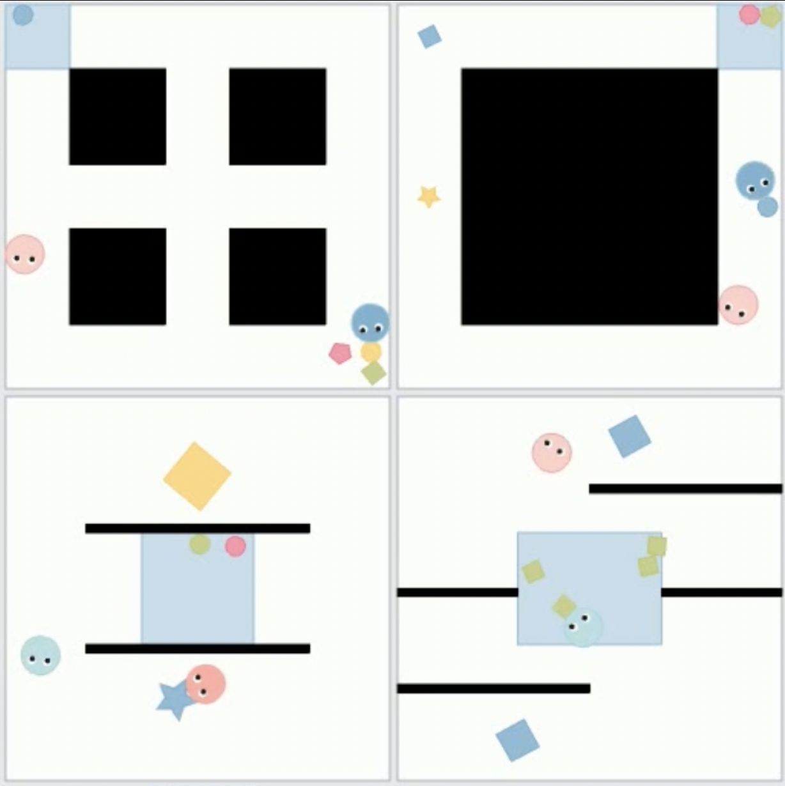
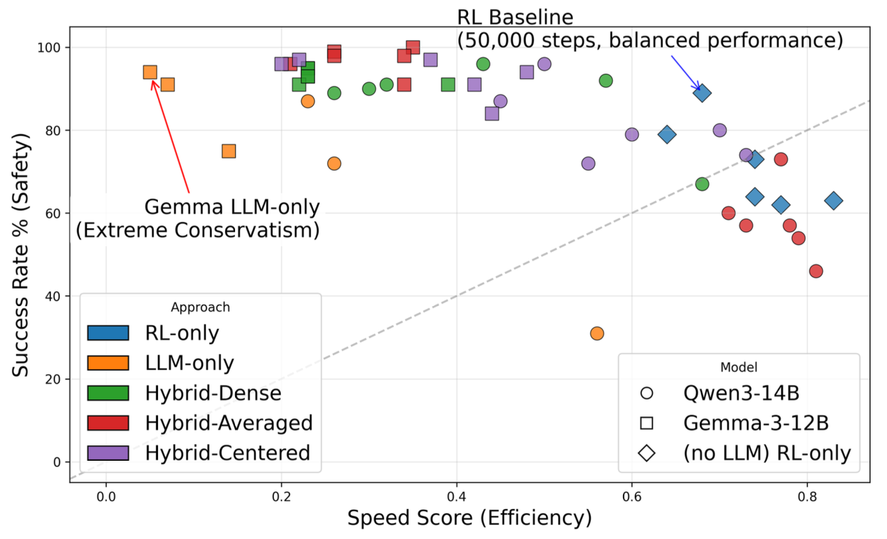

Research
My work spans over Robotics, reinforcement learning, human-AI collaboration, and data science. Below is a curated selection of ongoing and past research projects.
Physically Grounded Human-AI Collaboration
 Working in Professor Yen-Ling Kuo's lab, I contributed to the Physically Grounded Human-AI Collaboration project, a submission to the ICLR 2026 conference that focused on developing embodied agents that adapt their actions to physical dynamics and human interactions.
A Case Study on LLM-Guided Reinforcement Learning for Decentralized Autonomous Driving
 In the course Multi-Robot Navigation, I worked in a group and investigated how reinforcement learning, combined with locally deployable language models, shapes decentralized autonomous driving policies. This was a case study submitted to ICRA 2026.
UVA MARS Club - NASA Lunabotics Challenge
 Our team placed 5th among 68 universities in the final round in 2025. I directly contributed to enhancing the teleoperation process between the Jetson and the control station, as well as creating programs that enable autonomous excavation and dumping. I am currently researching and integrating SLAM and path planning using NAV2 with ROS2, tackling one of the most challenging problems in travel autonomy on regolith.
Our team placed 5th among 68 universities in the final round in 2025. I directly contributed to enhancing the teleoperation process between the Jetson and the control station, as well as creating programs that enable autonomous excavation and dumping. I am currently researching and integrating SLAM and path planning using NAV2 with ROS2, tackling one of the most challenging problems in travel autonomy on regolith.
Observational Learning in Electric Vehicle Adoption
Working with Professor Daisy Dai (Purdue University) and Natasha Zhang Foutz (UVA), I processed and analyzed large-scale mobile location data (X-Mode Social) and applied clustering algorithms (ex. Infostop, DBSCAN in scikit-learn) to identify visibility patterns of EV charging stations.
Teleoperation for Franka Emika Panda
Working in Professor Yen-Ling Kuo's lab, I implemented teleoperation of the Franka robot arm using a Meta Quest VR controller and space mouse for diverse manipulation tasks in both physical and simulated (Panda) environments through ROS2. This work supports 2–3 ongoing projects in the lab, facilitating efficient and consistent experimentation across multiple research directions.